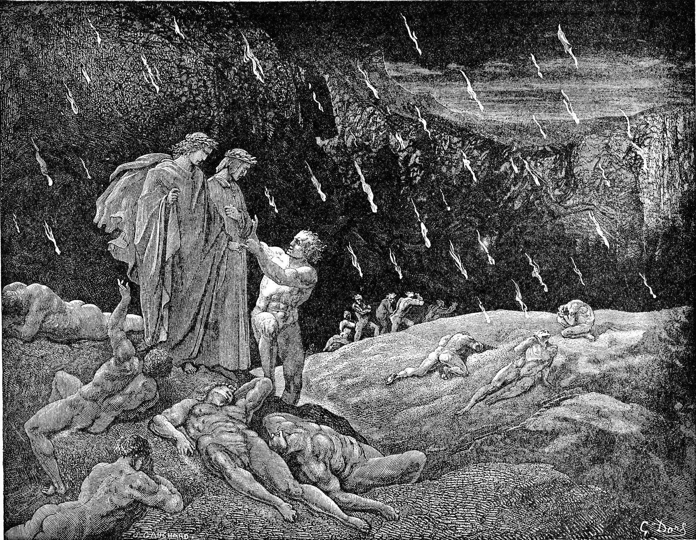

Travel

Traveling from the Sixth Circle to the Seventh Circle is not easy. You must descend a cliff to get to the ground below, where you will find the Minotaur patrolling. Try not to get spotted by the Minotaur; he is a dim-witted brute who has been reported to mistake nearly anyone he sees for his archenemy Theseus. If he sees you, don't bother reasoning with him! Simply dart away as fast as you can and enter the Seventh Circle. The Seventh Circle is the first circle of Hell so far that is segmented, containing three rings with differing punishments. As you descend, you will encounter all three rings and the damned within them.
The First Ring punishes people who committed violence against neighbors, such as murderers and tyrants, by immersing them in the Phlegethon, a river of boiling blood and fire. This ring is patrolled by Centaurs, so be careful not to be confused for a sinner if they're nearby. The Centaurs use their bows to shoot anyone who is too far above the surface of the river. The Centaur Nessus should be open to guiding you across the First Ring and can provide you protection from the other guards. Here, you can find Alexander the Great, Attila the Hun, and Pyrrhus.
As you descend farther into the Seventh Circle, you'll encounter the Wood of the Suicides, where people who committed suicide have turned into sentient trees and are picked on by Harpies. The punishment signifies how the people who committed suicide threw their bodies away, and thus no longer deserve them. Additionally, upon the Final Judgement of God, the people who committed suicide will not be given bodies like the other souls and remain as trees instead.
The final ring of the Seventh Circle contains the Blasphemers, Sodomites, and Usurers, who are punished by fireballs constantly raining from the sky into plains of burning sand, as depicted in the illustration below. Here, you can encounter Brunetto Latini, a very close mentor of our founder Dante. Latini is unexpectedly here for sodomy, highlighting that your punishment in Hell aligns with your internal relationship with God as opposed to any superficial displays of virtue.
Reaching the Eighth Circle is also very difficult. You must trust us as we give you this advice: you need to fall off the steep cliff at the edge of the Seventh Circle, and you will be caught by the winged monster Geryon. The beast appears as a vile monster with the face of an attractive man; he is very attentive and will bring travelers down to the Eighth Circle as long as they trust him enough to fall.
Tip: Sympathy for the Damned
When you first arrive to Hell, you may notice that you feel a lot of sympathy for the damned. These feelings are not advised; remember that these souls are damned by God, and there is no hope for them. However, you will find that by the time you reach the Seventh Circle, you feel far less sympathy for the souls down here. As you descend farther down the Inferno, the punishments (and the souls present) get exponentially worse. This initial issue should not be a problem at all by now.